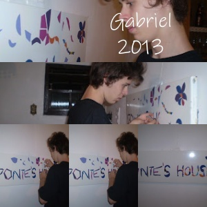
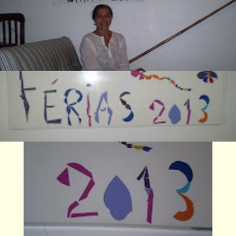
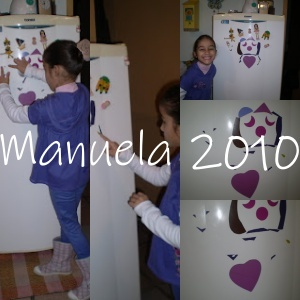
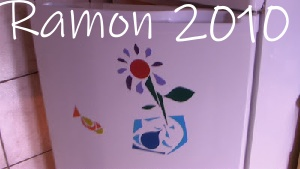
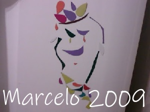

Esta serie de trabalhos foram criados para os meus amigos,que adiquiriram o "Kit Arte" para sua reconstrução ou não.
Alguns elementos com formas e cores diversas, são utilizados para a criação da composição.
O suporte da obra é a porta do refrigerador, "utilitário" do mundo domestico.
Assemblage é uma técnica artística de origem francesa, significando "montagem", que consiste em unir e colar objetos diversos, como pedaços de jornal, tecidos, madeiras e materiais encontrados, para criar obras de arte tridimensionais. Essa técnica expande os limites da pintura, incorporando materiais do cotidiano para expressar novas formas e significados, influenciada por artistas como Pablo Picasso e popularizada por Jean Dubuffet em 1953
Obras foram fotografadas, e enviada pelos "meus amigos" como "presente".
Gabriel
Iris
Manuela
Ramon
Marcelo
Denise

Zani

Maria Marli

Sonia